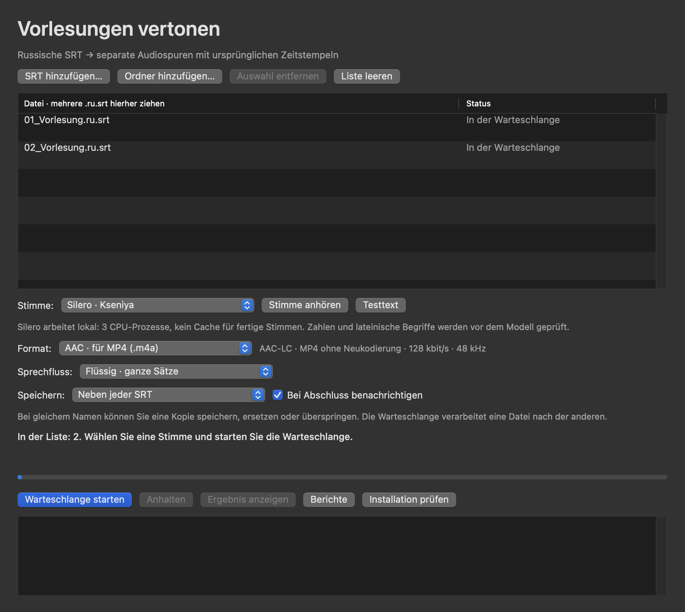

macOS 15+ · Apple Silicon
SRT to Sound
Erstellt synchronisierte russische Sprachausgabe aus fertigen SRT-Untertiteln als M4A oder WAV.
Release · 3.5.0Vor dem StartPython 3.12 ARM64, FFmpeg, Silero-Pakete und Modell v5_5_ru.pt separat installieren; nicht im ZIP enthalten. Keine Apple-Notarisierung.


So funktioniert es
- SRT öffnen
- Sprache erzeugen
- M4A / WAV speichern
Erste Schritte
App entpacken und zuerst die Abhängigkeiten nach Anleitung einrichten. .ru.srt hinzufügen, Stimme, Format und Ausgabeordner wählen.